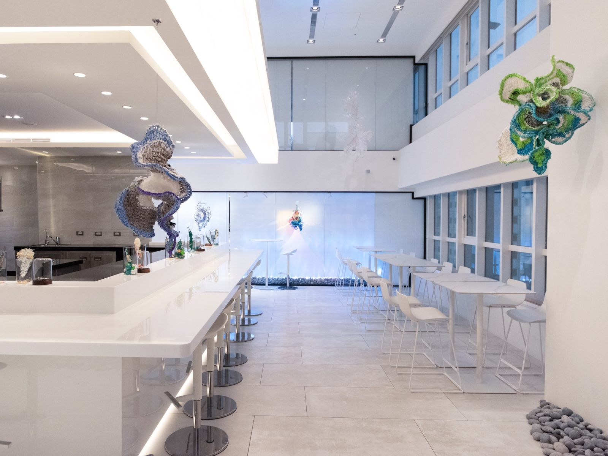
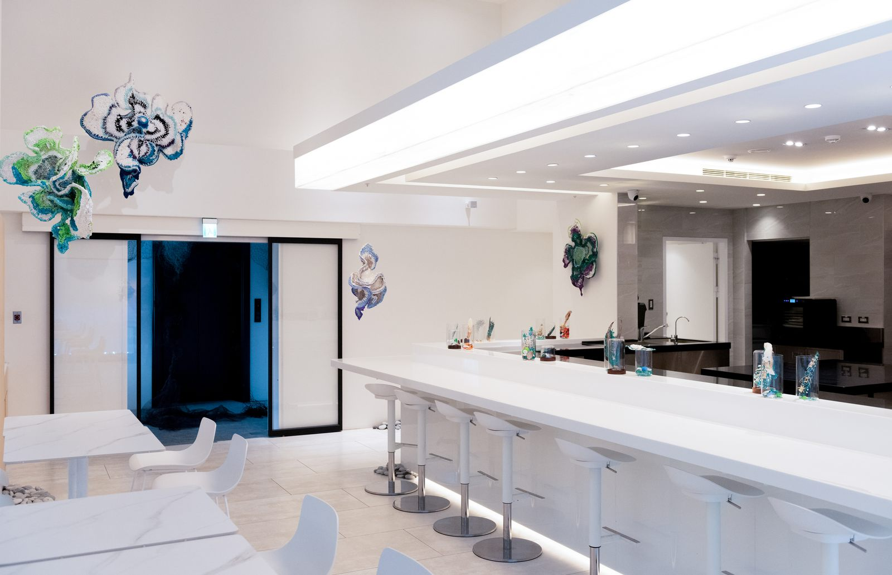
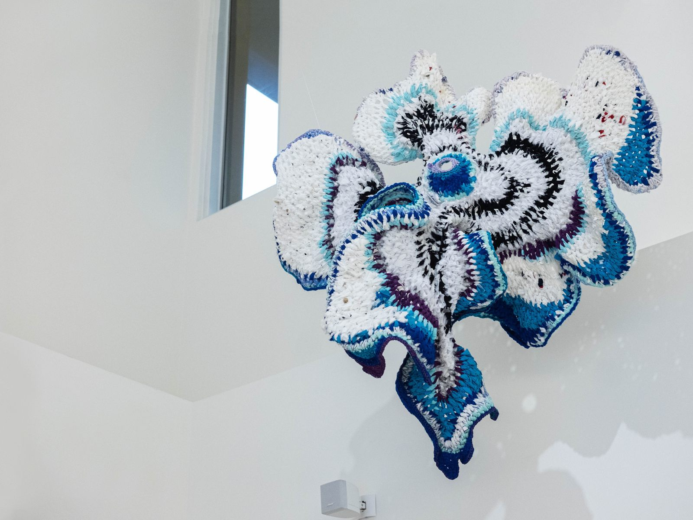
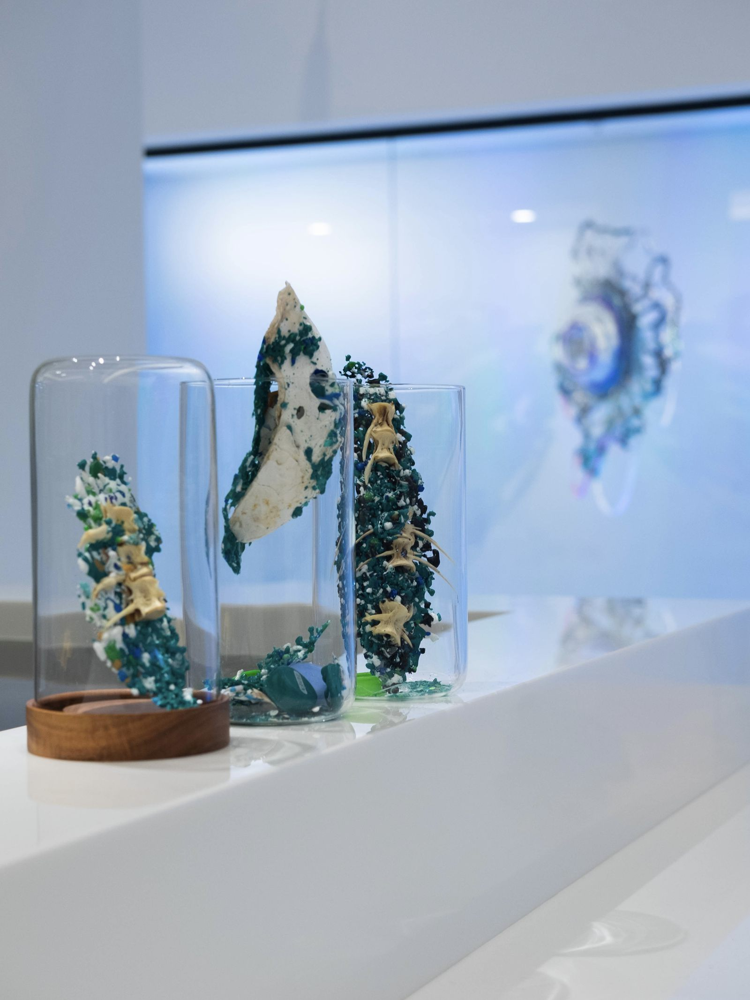
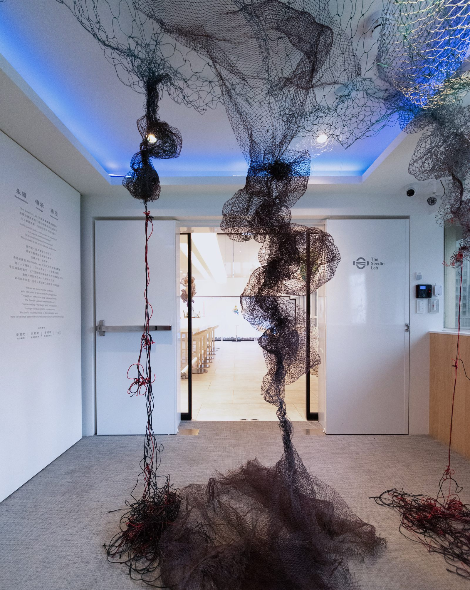
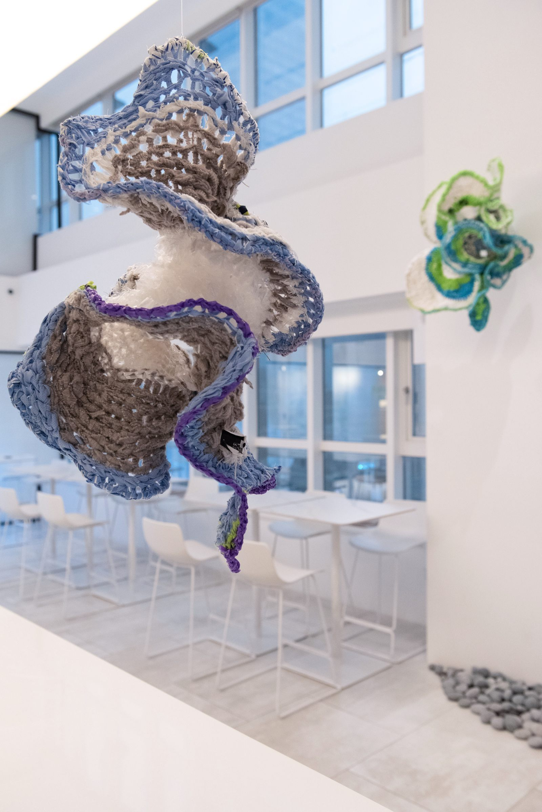

文 / John
文章轉載自 / Bella Taiwan
位在台北捷運市府站、今年六月開幕的沉浸式餐飲藝術空間「The Seedin Lab」，純白的外觀加上一道道「可以吃的藝術品」，而瞬間在網路上引爆話題，經過了數月的籌劃之後，終於迎來了第二季主題：「海洋：你的餐桌決定海洋的未來」！將以藝術品結合精緻的餐食，希望大家吃下美味的食物後，也能正視我們正面臨的海洋問題。
台灣海洋隱憂


四面環海的台灣，擁有豐富的海洋資源，也因此不需要花大錢就能吃到新鮮的海鮮，但是因為濫捕、環境污染等行徑，使得近三十年來台灣近海魚種銳減只剩下四分之一，而根據近年國際的調查，台灣附近海域的健康狀況，更在全球220個地區中排名199，幾乎是吊車尾了，甚至有科學家預測在氣候變遷影響下，到了2050年時，海裡將沒有魚！
各界專家聯手為海洋發聲


因此為了喚醒大家關注這個孕育生命卻漸被我們忽視且破壞的環境。The Seedin Lab 的迎來了第二波以「海洋」為主題的企劃，攜手致力推廣海洋永續以及食育的海洋顧問愛爾文、以有機雕塑探討當代消費文化議題的新銳藝術家洪郁雯（Julia Hung）、用10年實地記錄台灣土地與海岸聲音打造「台灣聲音地圖計畫」的聲音創作者吳燦政，以及由日本設計大師深澤直人製作的台玻自有品牌TG，並由The Seedin Lab的主廚團隊，透過創意料理的方式將這些海洋問題納入本季的菜單設計中。
新銳藝術家精心打造


另外，這次與新銳藝術家洪郁雯創作的裝置藝術也是一大亮點，從一踏進餐廳就會看到以漁網製作的大型裝置，讓大家體會海中生物因人為污染帶來的生存不便及威脅，接著會看到名為「仿生Biomimicry」、「殘骸Debris」等代表性作品，都是使用回收來的塑料、衣物解構再編織成的藝術品，從小就喜愛親近海洋的洪郁雯，希望將海洋帶給她的感受透過藝術形式傳遞給觀者。而除了對於海洋的省思外，洪郁雯也提到這次同樣想讓大家能探討「消費主義」的現象，很多乍看是廢棄物的東西在她的巧手下化作成一件件美麗的藝術品，希望大家不要因為身在消費主義的時代，去定義所有美好的事物，最後逐漸失去個人獨特的色彩。